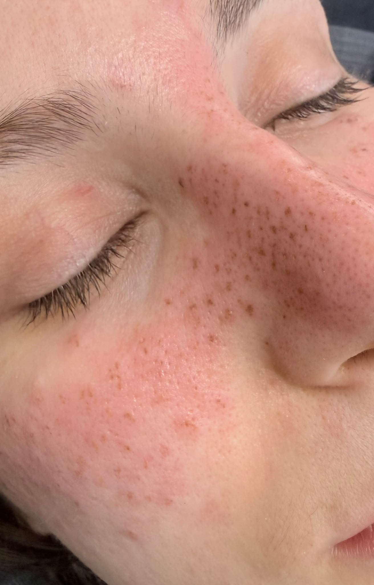

The Freckles Hub · Nohuska
Pecas y freckles: del efecto temporal a la micropigmentación
Todo lo que necesitas para elegir un efecto de pecas natural: diferencias entre maquillaje y micropigmentación, diseño, tono, curación, casos reales y valoración en Granollers.

¿Qué opción de pecas encaja contigo?
El maquillaje permite probar el efecto durante unas horas y cambiarlo cada día. La henna y otros productos cosméticos dependen de su formulación y uso correcto. La micropigmentación deposita pigmento de forma superficial y se desvanece progresivamente, por lo que requiere valoración, diseño, cuidados y seguimiento profesional.
No recomendamos métodos caseros que irriten la piel ni exponerse al sol para provocar pecas. Si observas manchas nuevas o cambios en una lesión existente, consulta con un profesional sanitario antes de cubrir o tratar la zona.
Empieza por la respuesta que buscas
Signature Freckles
Cómo diseñamos unas pecas que no parezcan una plantilla.
Primero hablamos de cantidad, zonas y visibilidad. Después proponemos una distribución con puntos principales y secundarios, variaciones de diámetro y espacios que se adapten a tus rasgos. El diseño se revisa contigo antes de empezar.
El color recién realizado se ve más intenso que el resultado asentado. La retención no es idéntica en todas las pieles, y la exposición solar, la rutina cosmética, el metabolismo y los cuidados pueden influir en su evolución.
Consulta antes de reservar
- Envía una foto actual sin filtro y con luz natural.
- Indica si quieres un efecto ligero, medio o visible.
- Adjunta referencias del estilo que te gusta.
- Cuéntanos si tienes sensibilidad o tratamientos recientes.
Caso real · Nohuska
El diseño cambia según el rostro.
Esta imagen muestra un trabajo propio y autorizado. Se utiliza como ejemplo de distribución, no como promesa de un resultado idéntico: cada propuesta se adapta a la piel, los rasgos y el objetivo.

Preguntas frecuentes sobre pecas y freckles
¿Cómo puedo tener pecas sin maquillarlas cada día?
La micropigmentación es una opción semipermanente. Antes se valora la piel y se diseña una distribución personalizada; después requiere cuidados y seguimiento.
¿Puedo probar primero con pocas pecas?
Sí. El diseño puede plantearse con un efecto ligero y concentrado en zonas concretas. La cantidad se acuerda antes del procedimiento.
¿Cuánto duran las pecas micropigmentadas?
Se desvanecen progresivamente. La duración depende de la piel, la exposición solar, los cuidados, el metabolismo y otros factores individuales.
¿Nohuska está en Barcelona ciudad?
No. El estudio está en Avinguda Sant Esteve, 40, 08402 Granollers. Todas las citas se realizan allí.
¿Se puede trabajar sobre cualquier mancha o lunar?
No se debe asumir. La valoración sirve para identificar zonas que no conviene pigmentar; ante dudas o cambios cutáneos se recomienda valoración sanitaria previa.
¿Quieres unas pecas que parezcan tuyas?
Valoración gratuita y diseño personalizado en Granollers.
Diseñar mis freckles